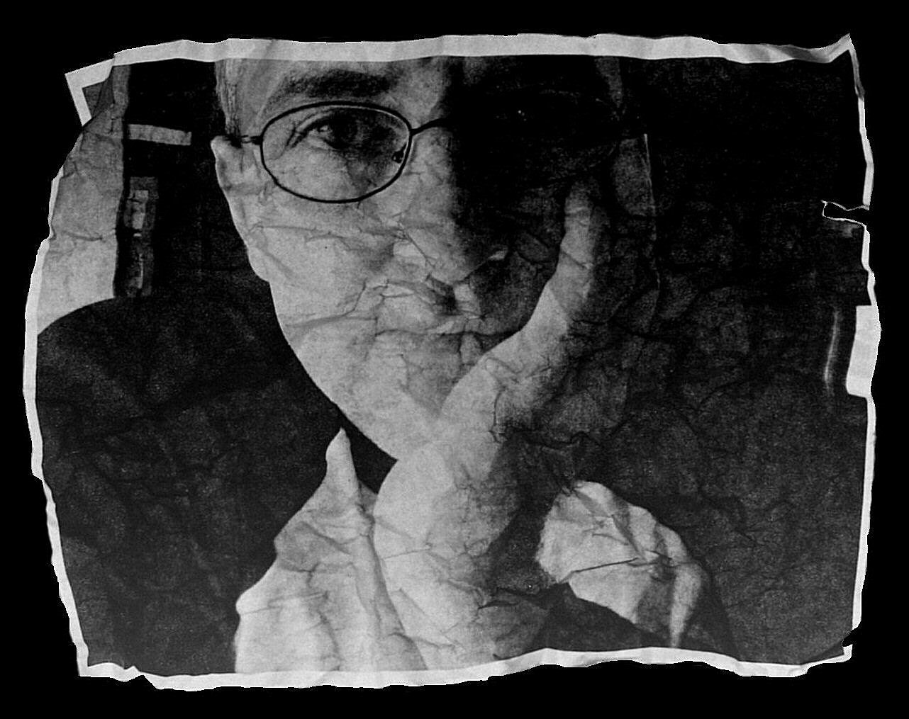

Janos Fulop is a self-taught artist resides in Hungary.
Working with a lot of different kind of materials and technics.
For a while he worked with stainless steel making "one of a kind" jewelry
pieces. Recently he picked up oil painting again and getting more and
more into digital art at the same time.
He has a passion for large scale art either on
canvas or digital. His pieces are meant for large
empty walls to fill.
For prints inquiries please contact via the form on
the contact page.